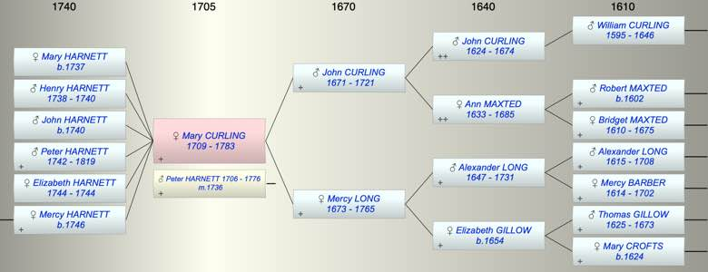

| [Index] |
| Mary CURLING (1709 - 1783) |
|  |
| b. 1709 at St Laurence |
| m. 04 Dec 1736 Peter HARNETT (1706 - 1776) at St Margaret, Canterbury |
| d. 02 Nov 1783 at St Laurence aged 74 |
| Parents: |
| John CURLING (1671 - 1721) |
| Mercy LONG (1673 - 1765) |
| Children (6): |
| Mary HARNETT (1737 - ) |
| Henry HARNETT (1738 - 1740) |
| John HARNETT (1740 - ) |
| Peter HARNETT (1742 - 1819) |
| Elizabeth HARNETT (1744 - 1744) |
| Mercy HARNETT (1746 - ) |
| Grandchildren (1): |
| James STOCK (1771 - ) |
| Events in Mary CURLING (1709 - 1783)'s life | |||||
| Date | Age | Event | Place | Notes | Src |
| 1709 | Mary CURLING was born | St Laurence | Note 1 | ||
| 1721 | 12 | Death of father John CURLING (aged 50) | St Laurence | ||
| 04 Dec 1736 | 27 | Married Peter HARNETT (aged 30) | St Margaret, Canterbury | Note 2 | |
| 1737 | 28 | Birth of daughter Mary HARNETT | Lydden | bap Lydden 18 Sep 1737 ex FS | |
| 1738 | 29 | Birth of son Henry HARNETT | Lydden | bap Lydden 28 Jan 1738 ex FS | |
| 1740 | 31 | Birth of son John HARNETT | Lydden | Note 3 | |
| 1740 | 31 | Death of son Henry HARNETT (aged 2) | Lydden | buried 6 Apr 1740 ex FMP PR | |
| 1742 | 33 | Birth of son Peter HARNETT | Lydden | bap Lydden 25 Jul 1742 ex FS | |
| 1744 | 35 | Birth of daughter Elizabeth HARNETT | Lydden | bap Lydden 6 May 1744 ex FS | |
| 1744 | 35 | Death of daughter Elizabeth HARNETT | Lydden | Note 4 | |
| 1746 | 37 | Birth of daughter Mercy HARNETT | Lydden | Note 5 | |
| 1765 | 56 | Death of mother Mercy LONG (aged 92) | St Laurence | Note 6 | |
| 10 May 1776 | 67 | Death of husband Peter HARNETT (aged 70) | St Laurence | Note 7 | |
| 02 Nov 1783 | 74 | Mary CURLING died | St Laurence | aged 73, ex MI | |
| Personal Notes: |
|
Her mother's will establishes that she married Peter Harnett but only refers to one child: Mercy. Infact there were at least four others.
Her own will, ex the Genealogist, Mary, widow refers to her sons John and Peter, her daughter Mercy wife of James Stock and her late mother Mercy Curling, widow, witnesses Ann Hooper and John Fagg. son John £250 son Peter £150 |
| Created on a Mac™ using iFamily for Mac™ on 8 Oct 2023 |